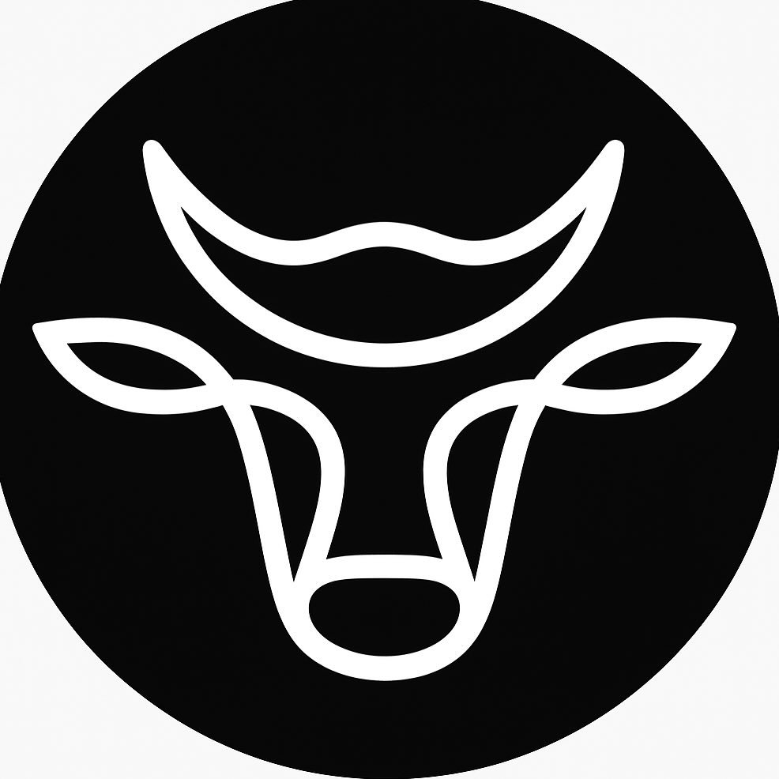
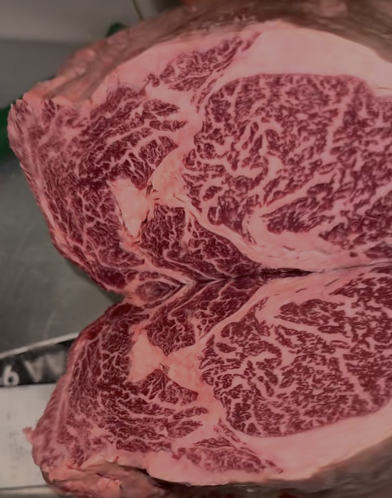
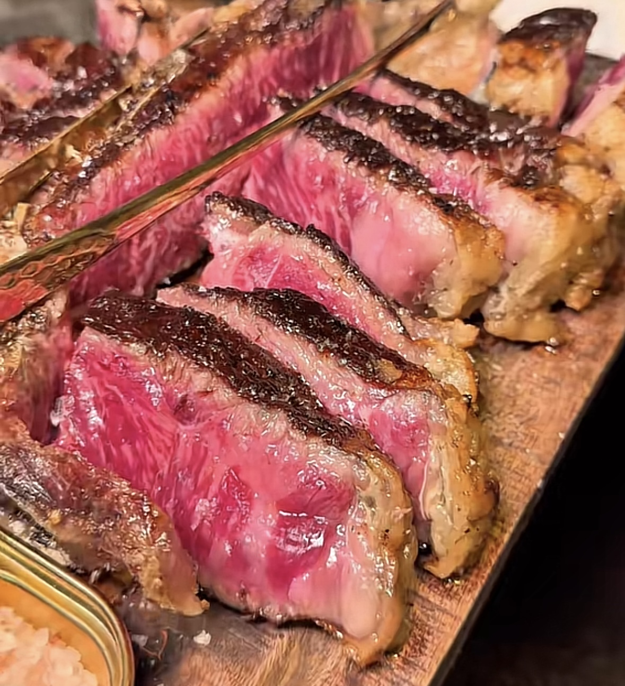
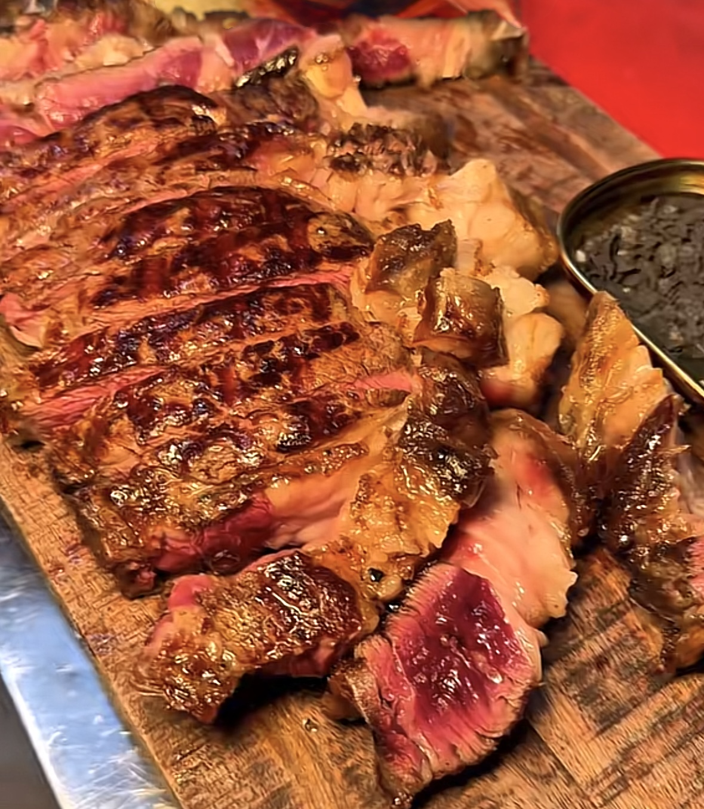
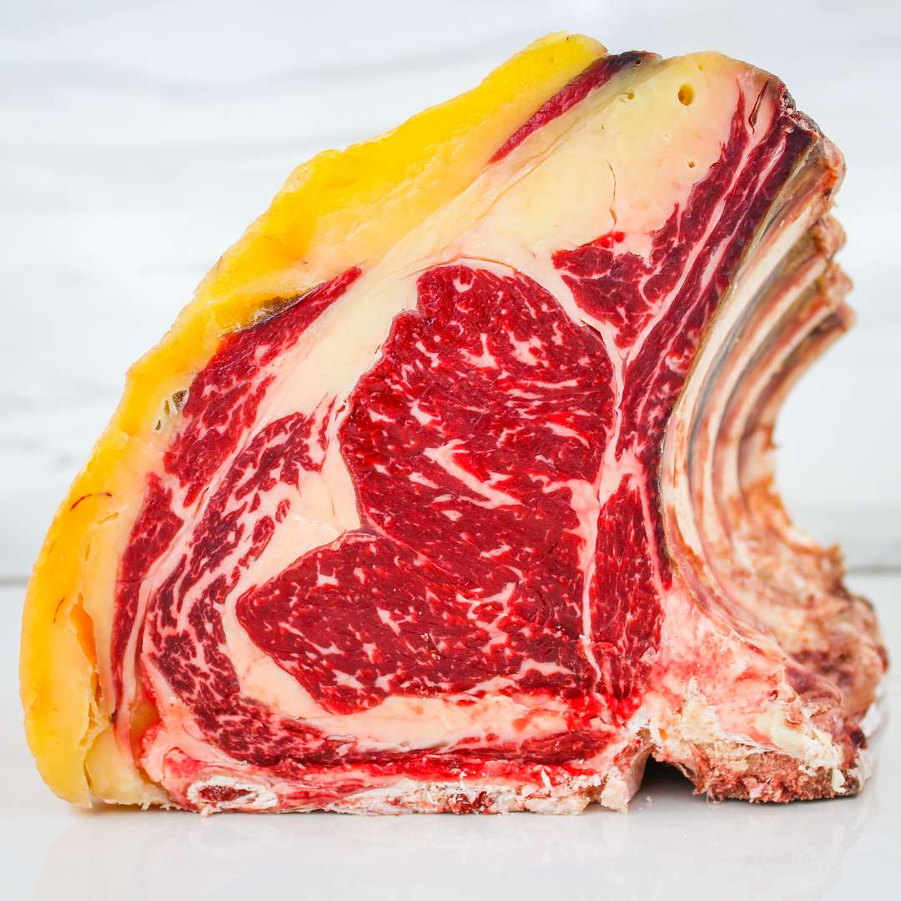
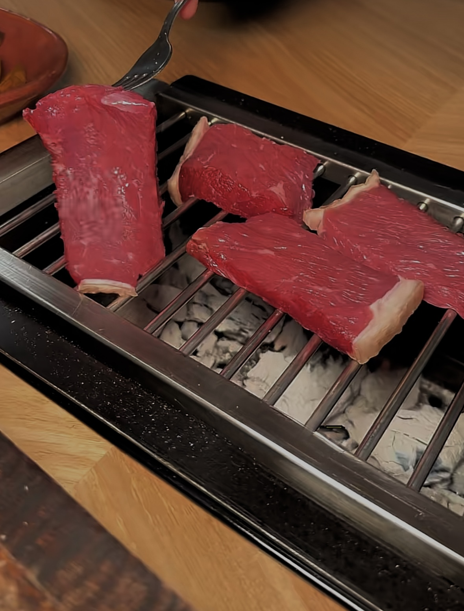

Il Toscanaccio 2.0 Prenota OraDove la maestria della frollatura e la passione per la carne danno vita a un'esperienza culinaria unica nel Salento.
🏆 Orgogliosamente tra le Top 50 Steak House
“La prima braceria con brace a tavola nel cuore del Salento.”
Situato in Piazza Roma a Leverano, offriamo un’esperienza sensoriale intensa. Recentemente riconosciuti tra le migliori 50 Steak House, ogni taglio che selezioniamo è il risultato di un’attenta scelta e di un impegno costante verso l’eccellenza. La nostra dedizione a garantire solo il meglio si riflette in ogni pezzo di carne, frollato con cura artigianale.




Non serviamo solo carne, offriamo un rituale. La brace arriva direttamente al tuo tavolo, permettendoti di gestire la cottura del tuo taglio pregiato esattamente come preferisci, esaltando i sapori unici della frollatura in un'atmosfera calda, elegante e conviviale.
Vivi L'Esperienza
"Esperienza incredibile! La brace a tavola è unica nel suo genere. Carni di qualità eccezionale, la Fiorentina a dir poco eccezionale."
"Ottimo ristorante, ampia scelta di carni nazionali ed internazionali. La sorpresa più bella è stata il banco carni."
"Quando vorremo mangiare dell'ottima carne il Toscanaccio è il locale ideale... servizio impeccabile e gentile!"